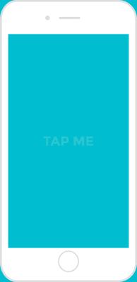
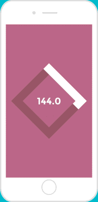

HOW-TO
BPM Calculator
- Find Tempo
- Simply tap anywhere on the screen to the beat of the music.
- Set Tempo
- Swipe one finger (vertical) to set a new tempo. Use two finger for more drastic tempo changes.
- Reset
- Wait two seconds between taps to start a new calculation.

Metronome
- Sound On/Off
- Shake your phone to switch the metronome click sound on and off.
- Choose A Sound
- Select a metronome sound in the Settings app or swipe three finger (vertical) to quickly switch between sounds.
